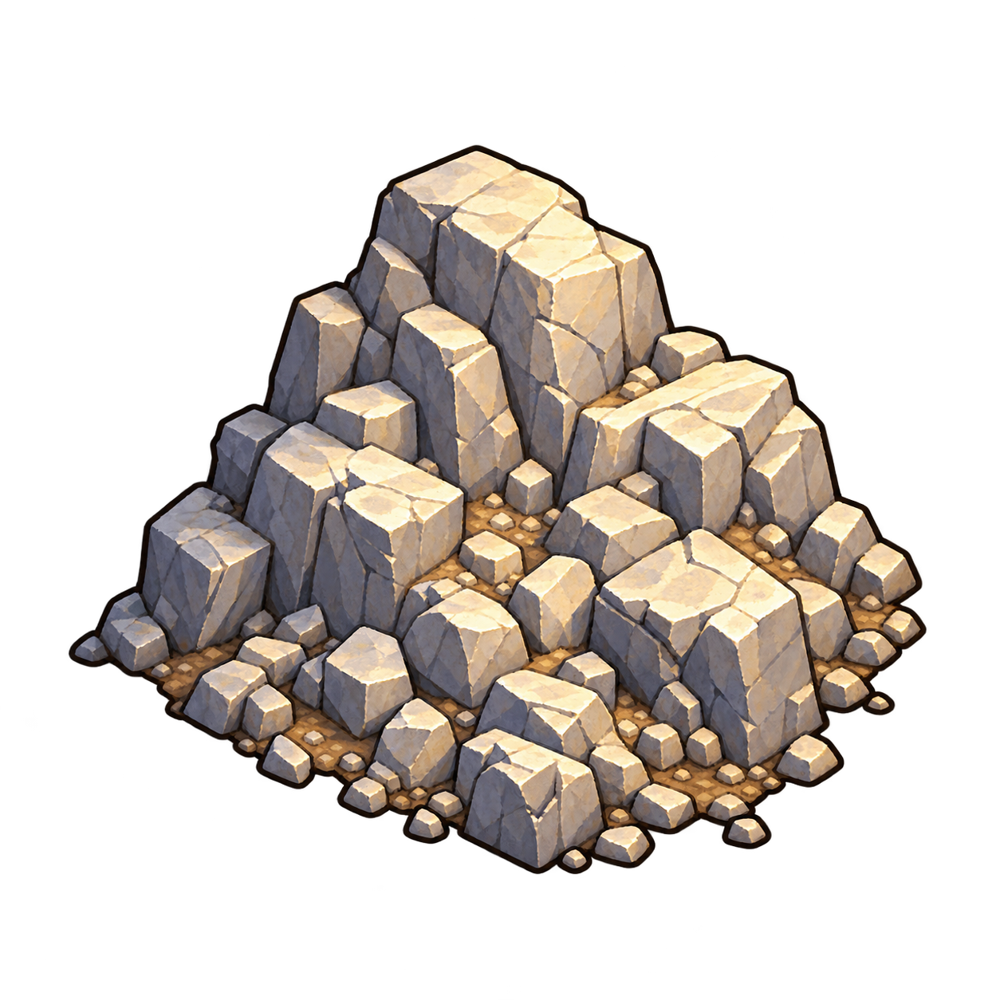

Génération au lancement implémentée le 28 octobre 2026
Génération du terrain au lancement
Génération serveur des ressources et sites exceptionnels au lancement, sur la grille commune à la heatmap.
Comprendre ce que cela implique
La génération actuelle utilise des blocs complets de 3 × 3 cellules hors influence. Avec les deux options activées, au moins 16 blocs éligibles sont nécessaires pour représenter les huit types avec au moins 50 % de blocs vides ; en dessous de ce seuil, la carte est créée sans ressources naturelles ni sites exceptionnels supplémentaires, en conservant les lieux du scénario. La grille reste commune à la heatmap.
Les tests tiennent compte des arrondis de la somme des poids et utilisent des terrains suffisamment grands. Le test Forge autorise l’unique conversation de rumeur tout en conservant ses vérifications d’achats. Ces corrections ne changent pas les règles. La graine privée et le terrain restent sauvegardés sans régénération des anciennes parties.
Deux options de partie indépendantes, cochées par défaut, contrôlent les contenus supplémentaires : Ressources naturelles (bois, pierre, terre fertile, fer, or) et Trésors et sites exceptionnels (trésors, artefacts, donjons). L’organisateur les choisit avant le lancement ; les mêmes réglages existent pour le test sur carte fictive. Les lieux du scénario sont conservés. Le serveur génère uniquement les catégories activées, avec au moins 50 % de blocs vides et un exemplaire de chaque type activé si la place le permet. Il faut 16 blocs admissibles avec les deux options, 10 avec les ressources seules, 6 avec les sites seuls. Sous le seuil applicable, aucun contenu supplémentaire n’est généré. Si les deux options sont désactivées, tous les blocs restent vides. Une reprise conserve le terrain sauvegardé sans nouveau tirage.

Dans cet article
- Blocs fixes et quotas — 2 novembre 2026
- Grille commune à la heatmap
- Emprise des lieux et exclusion des sites exceptionnels
- Lancement serveur et conservation
- Vérifications
- Simplification du 1er novembre 2026
- Résolution des sites — 1er novembre 2026
- Fondation et terrain — 1er novembre 2026
- Options de partie — 3 novembre 2026
Détails de référence
Texte de référence mis en forme et conservé dans l’historique de cet article. Les paragraphes datés peuvent décrire une évolution ou une étape antérieure.
Disponible côté serveur depuis le 28 octobre 2026. Chaque nouvelle partie reçoit un terrain caché de ressources naturelles et de sites exceptionnels, enregistré dans son état d’exploration. Les cartes et items d’indices sont désormais générés au même lancement (voir l’article Cartes de localisation et parchemins de recherche). La recherche, les installations et les expéditions de récupération utilisent ces données officielles.
Blocs fixes et quotas — 2 novembre 2026
Les nouvelles cartes utilisent des blocs fixes de 3 × 3 cases, sans chevauchement. Seule la case centrale porte la ressource ou le site exceptionnel. Chaque bloc complet hors influence et hors zones interdites est admissible ; les cases de bordure qui ne forment pas un carré complet restent vides et non constructibles.
Le serveur réserve au moins la moitié des blocs admissibles au vide, puis répartit le quota occupé selon les poids suivants, avec un minimum d’un exemplaire de chaque contenu non vide.
| Contenu | Poids cible avant arrondis et minimums |
|---|---|
| Vide | 50 % au minimum |
| Bois | 16 % |
| Pierre | 12 % |
| Terre fertile | 9,6 % |
| Fer | 4,8 % |
| Or | 1,6 % |
| Trésor | 3 % |
| Artefact | 2 % |
| Donjon | 1 % |
Ces poids ne sont pas des probabilités de découverte. Les quotas entiers et les minimums peuvent modifier les proportions, surtout sur un petit terrain. Avec les deux options activées, il faut au moins 16 blocs complets admissibles : en dessous de ce seuil, la carte est créée avec les blocs vides, sans ressources naturelles ni sites exceptionnels supplémentaires. Les lieux prévus par le scénario sont conservés et le minimum par type ne s’applique pas. L’algorithme sauvegardé est exploration-v4-fixed-blocks et les anciennes parties ne sont pas régénérées.
Les blocs de même ressource qui partagent un côté fusionnent transitivement en une zone constructible, limitée à un camp. Une diagonale seule ne fusionne pas les blocs. Les neuf cases d’un bloc découvert sont connues et peuvent être proposées à l’installation selon les contrôles serveur. Les extensions inconnues ne sont pas révélées.
Grille commune à la heatmap
PlayAreaGrid et playAreaCellSizeMeters fournissent le même quadrillage au générateur, au jeu et à la supervision. La taille de base reste 15 m en GPS et 15 000 m de conversion en simulation. Pour les grands rectangles englobants, elle augmente afin de rester sous la limite de 20 000 cellules candidates. La dimension effectivement utilisée est conservée dans l’état d’exploration.
Une cellule est retenue si son centre se trouve dans la play area et hors des polygones d’exclusion. Les centres hors zone ou exclus ne reçoivent aucun contenu. Les identifiants, lignes et colonnes sont ceux de la heatmap ; aucun quadrillage parallèle de ressources n’est calculé dans le navigateur.
Emprise des lieux et exclusion des sites exceptionnels
L’emprise locale utilise la portée normale des lieux, fournie par LocationSpacingPolicy : politique de portée de la partie en GPS, portées fictives existantes en simulation. Les bonus d’interaction propres à un héros ne modifient pas le terrain. Cette emprise sert ici au placement des contenus ; elle ne recalcule pas les territoires contrôlés par les équipes.
Une cellule dont le carré touche cette portée perd sa ressource exploitable : son contenu resource devient none, et suppressedByLocationIds conserve les lieux concernés. Le test porte sur l’intersection avec le carré, pas seulement sur son centre, afin de traiter également le bord d’un lieu.
Depuis le 1er novembre 2026, les trésors, artefacts et donjons sont placés uniquement hors de l’influence des lieux normaux. Toute cellule touchant leur portée normale est exclue du placement exceptionnel. Le parcours est unique : cartes de localisation, recherche extérieure avec la jauge, puis expédition de récupération (cette dernière reste à implémenter). Les lieux normaux fournissent toujours des indices, des rumeurs et des repères cartographiques.
Le générateur ne crée ni Location, ni rayon, ni marqueur supplémentaire. Les lieux détruits, non encore placés, hors de l’aire autorisée, les marqueurs d’indice et les lieux d’événement ne neutralisent pas les cellules. Les lieux neutres permanents participent comme les lieux possédés. Les évolutions d’influence après le lancement et l’installation de nouveaux camps restent à raccorder.
Lancement serveur et conservation
exploration-generation.js contient la génération sans effet sur les autres objets de la partie. server/lobby/initialize-exploration.js lui fournit une graine privée aléatoire indépendante de la graine publique du lobby. Le format enregistre cette graine, la date, l’algorithme exploration-v4-fixed-blocks, le contour de la play area, les répartitions et la politique d’emprise.
LobbyService l’appelle pour les nouvelles parties construites par le serveur, après leurs placements initiaux, et lors de l’initialisation historique depuis le navigateur. Dans ce dernier parcours, l’état d’exploration fourni par le navigateur est ignoré, et la play area validée du lobby prévaut lorsqu’elle existe.
Un état déjà initialisé n’est jamais remplacé par une nouvelle génération. Les reprises sur disque et les sauvegardes manuelles conservent leurs contenus ; les anciennes parties sans génération restent dans leur état antérieur. Aucun tirage ni remplissage rétroactif n’est effectué lors de leur reprise.
Les sites sont créés actifs et inconnus, sans seuil de récupération ni récompense inventée. Cette phase ne révèle aucun site et ne démarre aucune production. Les cartes et leurs items sont générés ensuite, dans le même lancement serveur. L’ancien parcours ResourceZone de prospection conserve ses coûts et déplacements, mais révèle désormais les gisements sans créer de lieu producteur.
Le bloc complet reste privé et retiré des réponses aux joueurs, même pour l’organisateur. La génération ne rend donc pas ces ressources ou sites visibles. La vue de connaissances ne transmet que les cellules, sites et indices autorisés pour le destinataire, sans graine ni destination cachée encodée dans les identifiants.
Vérifications
exploration-generation.test.js vérifie la reproductibilité, les répartitions, les exclusions, l’identité avec la heatmap, les grandes aires, les cellules en bord de portée, l’exclusion des sites sous influence et l’absence de modification des lieux. exploration-persistence.test.js vérifie les deux parcours de lancement, le refus d’injection d’un terrain navigateur, la reprise et la confidentialité. party-preparation.test.js vérifie aussi la génération dans un monde préparé.
Voir le format persistant et les règles complètes prévues.
28 octobre 2026 — le terrain généré est raccordé à la prospection et aux spécialistes transportés. Les découvertes restent individuelles ; aucune exploitation n’est créée automatiquement.
Simplification du 1er novembre 2026
À la reprise d’une ancienne sauvegarde, les sites encore actifs rattachés à un lieu ou placés dans une cellule neutralisée sont clôturés sans récompense ni nouveau tirage. Leurs indices actifs deviennent obsolètes et restent archivables ; les objets et les historiques sont conservés. Cette migration technique ne produit pas d’annonce de victoire fictive. Les sites déjà remportés ou disparus restent inchangés.
Résolution des sites — 1er novembre 2026
La résolution des sites exceptionnels est disponible. Les exigences et récompenses des trois difficultés sont configurées côté serveur et sauvegardées. Un seul tirage applique les provisions, récompenses et, pour les donjons, dégâts et moral des participants. Le site remporté est fermé pour tous. Les groupes reviennent ; les items ou cargaisons sans place restent conservés. Les résultats privés sont projetés sans tirage aléatoire ni données des autres joueurs. Cette mise à jour remplace les mentions antérieures de résolution à implémenter.
Fondation et terrain — 1er novembre 2026
La fondation des camps et leurs évolutions selon le terrain est disponible sur place ou par expédition depuis un poste de prospection. Les positions, coûts, disponibilités et évolutions sont validés par le serveur. La prospection révèle aussi les cases vides. Le camp conserve son gisement d’origine ; son influence neutralise les cellules voisines et ferme les sites exceptionnels encore actifs couverts, sans attribuer leur butin. Les lieux historiques conservent leurs règles. Les possibilités des nouveaux camps sont transmises comme état officiel, sans nouveau calcul de règles dans l’interface.
Options de partie — 3 novembre 2026
Deux options de partie indépendantes, cochées par défaut, contrôlent les contenus supplémentaires : Ressources naturelles (bois, pierre, terre fertile, fer, or) et Trésors et sites exceptionnels (trésors, artefacts, donjons). L’organisateur les choisit avant le lancement ; les mêmes réglages existent pour le test sur carte fictive. Les lieux du scénario sont conservés. Le serveur génère uniquement les catégories activées, avec au moins 50 % de blocs vides et un exemplaire de chaque type activé si la place le permet. Il faut 16 blocs admissibles avec les deux options, 10 avec les ressources seules, 6 avec les sites seuls. Sous le seuil applicable, aucun contenu supplémentaire n’est généré. Si les deux options sont désactivées, tous les blocs restent vides. Une reprise conserve le terrain sauvegardé sans nouveau tirage.